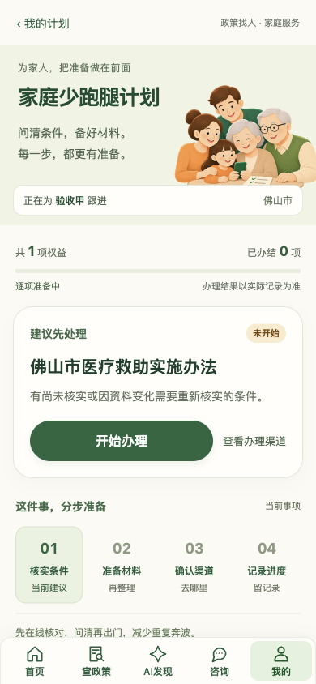
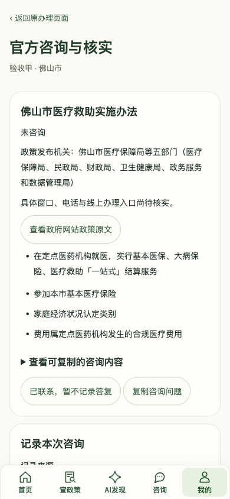
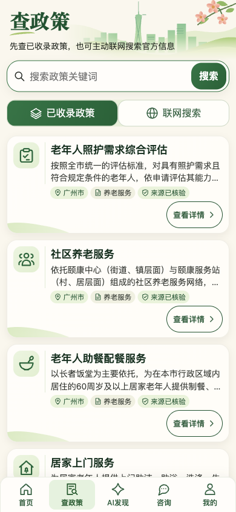
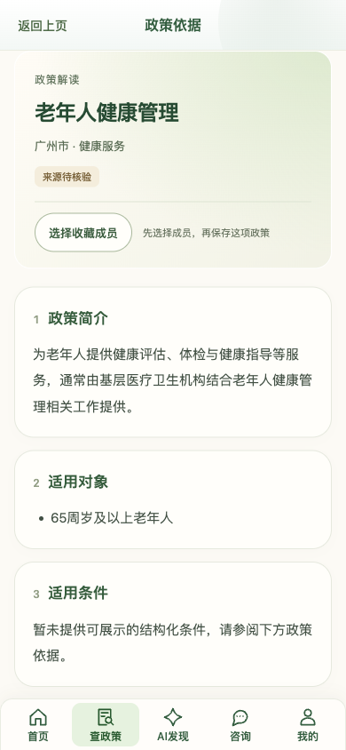

6. 少跑腿计划总览已修复人物插画、真实进度与四步办理路线清楚，主操作首屏可见。P2：右上角还残留“政策找人 · 家庭服务”，与已确认的简洁偏好不符，应移除。删除右上残留说明，插画、进度和任务卡保持原样。
10. 官方咨询与记录可用，表单较长先给官方依据和咨询问题，再记录实际沟通；日期、状态与保存操作可读。P3：咨询记录字段较多，可把选填的后续材料与要求分组折叠；涉及工作习惯，暂不改动。查看补充状态
13. 政策搜索良好，联网结果有验证边界已收录/联网使用正确的选中标签；无结果和加载反馈清楚，装饰与历史页一致。P3：无结果画面比较简洁，可后续增加更显眼的重试引导。当前隔离预览的联网搜索为模拟演示，本次只覆盖加载和无结果，不代表真实搜索效果。查看补充状态
14. 目录详情与收藏成员选择已修复并走通待核验标签、长标题和独立收藏区清楚。P1：选择收藏成员后停留在我的服务，无法回到原政策继续收藏；需让现有选择页带成员返回原政策。复用成员选择页，带所选成员返回原政策；管理成员后也能返回；收藏成功且验证后恢复原状态。查看补充状态